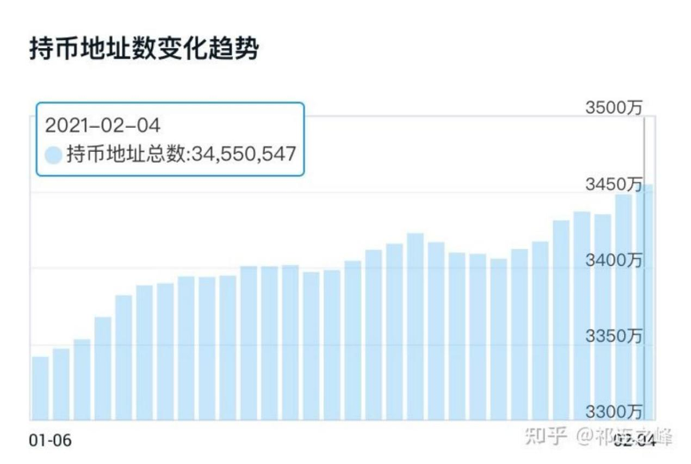
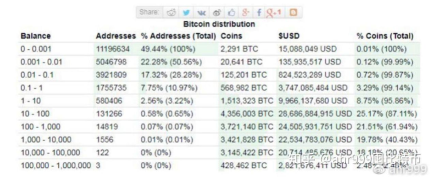

Bitcoin Studies: Finding Nakamoto Satoshi【11】——The global consensus requires an official consense
Updated: Dec 12, 2022
ZWS(Zhu Weisha), a Famous Chinese Entrepreneur

Bitcoin started as an air phase with only cost and no price, and the air-to-value transition is commonly thought of as pizza day on May 22, 2010. Then, it was the beginning of peer-to-peer commodity exchange, and after that, Bitcoin represented the value of the commodity. The first bitcoin trading platform, M.T.Gox (Mentor), started trading bitcoins on July 17, 2010. Note: Previously, bitcoins only represented commodities; once changed bitcoins with fiat currency, it meant that bitcoins officially became a medium of exchange and had the characteristics of money.
11.1 Measure of money
Currency represents assets, and assets have standards for measuring assets, which we will discuss later. The currency itself also has a standard of measurement. Just like a ruler has a tape measure, a caliper, and a ruler, they are suitable for different scenarios. We compare bitcoin to fiat and gold because their use cases are the same. The difference between them is that gold is history, fiat currency is the present, and bitcoin is the future.
Money itself can be an asset, but not all assets are money. Likewise, money itself is not necessarily an asset.
What is currency?
Many objects have represented the medium of exchange, such as shells, stones, metals, and paper money. Even certain strings of numbers are now described as currency. As a currency, there are quality issues. There are different indicator systems for measuring the quality of a currency. There are four most important indicators, and we can use these indicators to analyze a currency.
Currency has four characteristics: universality, Stability, Settle-easily, and popularity. Assets do not have all four of these characteristics.
Universality: Bitcoin is a super-sovereign currency, more universal than fiat money.
The country restricts the circulation of fiat currency because each country has its fiat currency. The scope of Bitcoin circulation is almost unrestricted, and only a few countries have nominal restrictions because the Internet is free. But the circulation of Bitcoin is hindered by its volatility, which is the same as gold. Therefore, Bitcoin is as unsuitable as gold as a standard for direct transactions. And experiments with blockchain stablecoins have opened our eyes to new possibilities.
Stability: Bitcoin's Stability has run for 13 years without significant failures, and there is no problem with time-tested Stability. 91% are mined out, and 97% are mined out by the end of the 5th cycle, i.e., 2027, which means there is only a 3% maximum risk in terms of Stability. It can almost be said to be negligible from the view of over-issuance. Except for technical Stability, quantity stability does not exist in terms of over-issuance. Quality stability cannot be falsified. Trust stability is trading Transparent.
Four indicators of stability：
1. Stable technology, will not die out.
2. Stable quantity, the total number can be known.
3. Stable quality, can't be faked.
4. Stable trust, transparent transactions and books.
Readers can compare gold and fiat currencies with four Stability by themselves, which I won't discuss here. The conclusion is that both flaws are unchangeable, and Bitcoin is superior to both. Although Bitcoin also has flaws, they are not unimprovable, and therefore Bitcoin is the most suitable medium of exchange and monetary representation in modern times.
Settle-easily: Compared to the fiat currency of clearing and settlement, bitcoin has no problems; there is a barrier to payment. This barrier also affects popularity. We classify such problems as popularity issues, analyze them one by one, and propose solutions or directions for each. And gold is wholly inapplicable at this point.
Popularity: measured by consensus or users. Bitcoin is not a global consensus, as we will discuss later. It is a flaw of Bitcoin that cannot be solved by technicians alone.
11.2 Popularity of Bitcoin in the Blockchain Circle
Popularity is the biggest weakness of Bitcoin, which is divided into in side and outside the blockchain circle. First, look at the status quo of Bitcoin in the blockchain, and then see if there is a way for one hit to win. Popularization within the circle is easy, and every bit of progress lays the foundation for popularization outside the circle.
11.2.1 The necessity of popularity in the blockchain circle
According to Figure 1, the website "Zhihu," as of February 4, 2021, had 345,505,547 bitcoin addresses. However, due to centralized exchanges, each of which has many users, Binance reached 120 million account holders, with a 20% growth in 2021. Binance does not allow American customers to open their accounts, but Coinbase, a U.S. company, can allow Americans to open accounts. It will have 56 million registered users in 2021. There are reportedly 25.2 million people in the U.S. holding bitcoin. (1) That means 30-50 million bitcoin holders on all Exchanges. It represents about 25% of the entire cryptocurrency circle. Bitcoin has a lot of room to grow in the cryptocurrency circle itself.

Figure 1 the number of bitcoin addresses on the chain
Figure 2 shows the distribution of the number of bitcoin addresses on the website "Zhihu," with 49% of the addresses holding less than 0.001. Due to the bitcoin change, most addresses are not owned by independent people. However, we need to consider the possibility that there are independent users with 0.01 bitcoins. Holding 0.01 bitcoins is also equivalent to $200, the price of a hard wallet, so it is likely to be owned by someone other than an independent person. This way, the number of independent coin holders on-chain could be 10 million. Most people are motionless for a long time or rarely trade. A conservative assumption is that there are 40 million people holding bitcoins on-chain and off-chain. The average person has 0.5 bitcoins.
Excluding the large "whale" addresses that don't move, the average retail user holds less than 0.2 bitcoins. Thus, 0.2 is a tiny psychological number for a retail investor, and the price is too high for a small retail investor to buy. The cost of Warren Buffett's stock in the U.S. is $440,000 a share, and the Buffett effect has affected the psychology of the core Bitcoin team. It is considered normal to have a high price. For small retail investors, who would buy it? Warren Buffett's stock was never considered a currency, his target is fund managers, and the world only needs a few thousand people. In fact, Buffett only needs the consensus of "money," Bitcoin is used as a currency and requires not only a consensus of money but also a consensus of people. Insiders are the best source of consensus. Do a little research to know the views of retail investors: Bitcoin is too expensive.

Figure 2 Distribution of the number of on-chain positions in bitcoin
11.2.2 The easiest way to popularize within the circle
Earlier, I mentioned a solution to this problem in "Establishing a Bitcoin Prize and a Satoshi Nakamoto Prize." According to Satoshi Nakamoto, moving the decimal point requires at least a 5-digit shift. Moving it six places is best. Also, set up a bitcoin Foundation with a portion of the transaction fees. However, this point has been said many times, which will be discussed later. It is needed to make up for the bitcoin consensus. Also, it benefits the popularity of bitcoin in the cryptocurrency circle. The Bitcoin community advocates natural evolution, which is suitable for the old era when a wine is not afraid of deep alleys. Now it's the information age, the laws of the market have changed, and adapting to the market is the constant law.
Dogecoin's success lies in being cheap, adapting to the market psychology, and marketing efforts, including the endorsement of Musk. Dogecoin will have more than 132.6 billion coins issued by September 2022, and the coin price on September 28 is $0.062. Bitcoin's decimal point shifted six places to the right; one bitcoin can become 100,000, all more than three times more expensive than dogecoin. The most exaggerated is the ShiBcoin price of $0.00001091; the market capitalization is 6 billion dollars, and it has no content or decent market activity; it just captures the psychology of people. It is more than Ethereum Classic (ETC) $3.72 billion, more than the old Bitcoin copycat Litecoin (LTC) $3.71 billion, and more than DeFi's leading Uniswap (UNI) $4.7 billion. That's psychology. If bitcoin is split off and the price drops, the number of people will increase.
Bitcoin will also go all the way up, so the most extensive application is not payments are transactions, and that's where Metcalfe's Law plays a key role. Increasing the number of people in the circle is one of Bitcoin's most significant pain points. This time drop, the market didn't follow PlanB's model because his model is based on a four-year halving rule that doesn't include Metcalfe's law, just as every time the stimulus effect wanes, a simple halving stimulus is no longer enough. Every four years, the halving cycle is on the long side, and making a significant improvement at the low point of the halving process will disrupt the steps of short sellers.
11.3 Popularity of Bitcoin outside the blockchain circle
Popularity outside the currency circle has three issues: ease of use and security of wallets; lack of official consensus; larger bitcoins holdings in the hands of Satoshi Nakamoto.
11.3.1 Ease of use exceeds the security and convenience of banks to be widely popularized
The issue of ease of use.
This issue is no longer a problem for centralized cryptocurrency Exchanges. The current crisis is the credit of Exchanges, and the current solution is to incorporate regulation. The easiest way is to bank account custody. The disadvantage is going back to the old way of centralization. This kind of problem belongs to the second layer application of bitcoin, and now it seems that both the centralized technology of the cryptocurrency exchange and blockchain technology for the second layer are flawed. Satisfying the regulatory authorities the blockchain circle is dissatisfied, and the meet circle, does not meet the requirements of the regulatory authorities. Popularity must solve two good problems and simultaneously solve the payment defect so that the Internet enters the WEb3 era. Web3 calls for new second-tier technologies. For this, you can refer to the solution provided by literature (2), which provides ease of use and security that exceeds that of banks.
11.3.2 Bitcoin requires official consensus
This problem is caused by history. The Bitcoin idea originated from cypherpunk and has a natural tendency to rebel against the government. Creating their cliques is not destined to succeed. The 2000s saw the emergence of several reality-oriented digital currencies, making Satoshi Nakamoto from the small circle of thinking to face the public. The market is finally recognizing Bitcoin's leading thinking and the ingenuity of its design. However, with the anonymous method, even if there is a reason for the publicity of the ledger, there is a solution in the design, and they are destined to be unwilling to cooperate with the government. How to cooperate? The community may not support the initial talk of working with the government.
The Bitcoin consensus is incomplete compared to gold. Gold is the global consensus, with 17.2% held by official holdings in 2011. (3) Literature (3) Statistics the total number of gold held by central banks of various countries. Currently, there are reports that the total number of official gold holdings reaches about 20%, but no accurate statistical report has been seen. a large amount is still privately held. The number of official bitcoin holdings is unknown, and it's part of the official hand from confiscated, and the market increased part of it.
Humans have used gold as money for thousands of years. The state-issued fiat currency, starting with the Chinese Song dynasty, issued Jiaozi, whose currency depreciated at a rate similar to today's fiat money in purchasing power, with less than a hundred years left with less than a few percent of the purchasing power. Finally, paper money did not become popular. Gold due to the defect of liquidity; the silver note was generated. The U.S. dollar was the equivalent of a silver note, giving rise to The Bretton Woods system. The lack of Acceptance capacity of the dollar led to the breakup of the system. The whole Bretton Woods establishment and disintegration was similar to the China Song dynasty Jiaozi initiated by the private. In the beginning, there was credit, then the rich merchants broke faith, the official intervention, the Jiaozi gradually without the nature of the silver note, that is, without the asset endorsement or a small amount of asset endorsement, and today's fiat money is the same. Of course, the fate of fiat money is the same. Because human nature is the same. (4)
The flaws in the design of the gold standard, and the lack of computer technology at the time, Like the Song Dynasty, the gold standard is not suitable for modern economic development. Nevertheless, It has become the mainstream view in the economic circle. Allowing Keynesianism to exploit the loopholes. Actually, Keynesianism is a quick fix but has regulators treating it as a multivitamin. One inflation and financial meltdown after another declared the bankruptcy of various theories of monetary issuance and regulation. Let's compare the dollar to a Ponzi scheme. Which are a convincing story, to begin with, and so is the U.S. dollar, which promises to pay its debts with taxes. Then the Ponzi scheme was also a trustworthy payment at the beginning. In fact, the original story has long been unreliable. It relies on borrowing the new to repay the old. As long as the chain continues, it will keep turning. Likewise, the dollar debt, can U.S. taxes be repaid? The later stage of the Ponzi scheme is the rise in the geometric progression of debt. The same is true for the U.S. dollar right now.
Bitcoin makes up for gold's liquidated flaws and makes it possible for us to return to the digital gold standard, i.e., the Bitcoin standard. However, as a global consensus, Bitcoin lacks the official Part, and the consensus is incomplete. To be like gold must be complemented by official recognition. The bitcoin standard, in particular, is simply impossible to do without official recognition. Is it that official involvement is centralized? Gold officially has about 20%. Is gold centralized? This is because some people do not distinguish between the Bitcoin system and Bitcoin. Assuming that the official controls the Bitcoin system, it also needs to control the global computing power. It is useless to control any party alone. If you can’t even control the system, Bitcoin can’t even control it. which can refer to the description in the fifth chapter of the literature (2). liquidated core is open and transparent, acting according to available rules, and there is certainty about the outcome expected. See section "10. The Significance of Satoshi Nakamoto's Nobel Prize" for a description of the machine's credibility. In the next section, we describe how we could use Bitcoin to save the U.S. dollar.
11.4 The Chosen Son Satoshi Nakamoto
New resources are needed to resolve historical debt, and this resource is not used to draw numbers on a computer but to pay off the debt with real money. The value of Bitcoin is converted from the electricity cost, which rises geometrically. Only it has the potential to outpace the growth of U.S. Treasuries. It just so happens that Satoshi Nakamoto has more than 1 million bitcoins.
11.4.1 Helping cypherpunks realize their dreams
Also, Satoshi Nakamoto has over 1 million bitcoins in his possession, close to 5% of the total, and he has never communicated this to the market. It's a bombshell for the market, and it doesn't know what the future holds. He is a one-person decision, and the level of terror exceeds the decision-making mechanism of the Federal Reserve.
Cyberpunk has a quote, "advocating widespread use of strong cryptography and privacy-enhancing technologies as a route to social and political change." There are 25.2 million Americans who hold Bitcoin, (1) half of the global holdings. If Bitcoin is good, that is America's good. Today it's time for Satoshi Nakamoto to realize the ideal of "social and political change" and fill in the missing Part of the consensus blank.
How do? Satoshi Nakamoto Donates No Less Than 1.1 Million Bitcoins, which becomes the reserve currency. The foundation is laid for it to become a commodity price ruler after 120 years. Lays the groundwork for the Bitcoin standard and the foundation for a strong dollar. Retirement of credit-based coins without asset backing, making the dollar a stablecoin for bitcoin. Thousands of households issue their currencies based on the bitcoins in their hands; see the next section for details on how to do this.
11.4.2 The failure of algorithmic stablecoins sounded the death knell for fiat currency
Related stablecoins attempts such as DAI and USDT have pioneered the way. The technical means are available, and the experiments are successful. Blockchain is the laboratory of contemporary finance, and understanding the blockchain looking back at the operation of the fiat currency, is very clear; where are its defects? If finance becomes a science like physics, there has to be a financial laboratory like a physics laboratory. All the formulas of physics have to be experimentally proven. Obviously, sociology is more complex than physics, and there are more uncertainties than physics. The solution is to use the ecological simulation approach, and any blockchain project is self-formed ecology, a simulation of social and financial ecology. Creative failure is not a significant loss. The failure of the algorithmic stablecoin is a wake-up call for fiat currency. Fiat currency is the unfulfilled tax backing, and this backing is uncertain. Algorithmic stablecoins are equity endorsements, and this equity is not as reliable as state taxes. Algorithmic stablecoins have one regulating factor, quantity regulation, which adjustment is based on the algorithm. The fiat currency has two regulators, a quantity and an interest rate. But the rule behind it is not even an algorithm; the decision-making process is based on unreliable data, which is similar to deciding by slapping the forehead. Suppose the algorithmic stablecoin has a bailout; will it collapse? The collapse of the algorithmic stablecoin lies in the fact that the equity behind it is much higher than its value. Three hundred million dollars now reflects Luna's equity value, which was 60 billion before the collapse; how much is it overvalued? Let the masters of the financial markets hunt is destiny; the United States is not afraid of hunting because it can have infinite over-issuance. Inflation will show up gradually, which is what the latter government can do. We are all in the middle of a Ponzi scheme that fiat currency; the funny thing is, knowing that I've been deceived has no way out. Satoshi Nakamoto saw this and came up with Bitcoin to find a way out. The following section, "Realize the Solutions of Bitcoin Dollar Standard," is one way to do this.
The death knell of fiat currency has sounded with bitcoin. No matter how fiat currency wanted to stay on the stage, it took only a few hundred years from the rise to the fall of the historical stage, which is the same as the fate of his ancestor "Jiaozi" in the Song Dynasty. The natural growth of Bitcoin does not require operation. Satoshi Nakamoto can wait for it; Bitcoin can wait for it, and wait for the world comes to him; this is also a natural event. It is God's choice; everything is at the timing.
11.4.3 There can only be one global currency consensus
The currency standard is just like the scale, China has an inch, a ruler and zhang. But this scale is the Chinese consensus; the world's scale is kilometers, meters, millimeters, and micrometers. This consensus is the global consensus. Two sets of standards will be popular in one place, but there is only one global consensus. Money through natural selection, gold became the global consensus; digital gold only Bitcoin exists for this opportunity of global consensus. The following section will analyze the various assets competing with Bitcoin.
Bitcoin is the work of the Chosen One. Another giant compared to Satoshi Nakamoto is the American industrialist Henry Ford. Streamline is the foundation of modern industry, as if it were simple, influencing and driving the rapid progress of our times. Bitcoin is the foundation of contemporary finance and will affect the next era. They are both extraordinarily well-integrated and visionary. In 1921, Henry proposed the creation of an energy-based currency that could form the basis of a new monetary system, and the article was published on the front page of the New York Tribune on December 4, 1921.（5） Very coincidentally, Bitcoin is also an energy currency. The proof-of-work (POW) model dictated that energy-backed Bitcoin and this proof-of-work mining method was heavily criticized for its supposed energy consumption. This criticism ignores Bitcoin’s ability to accelerate the transition to renewable energy, the use of wasted energy. Because of technological progress, the mine with the lowest cost wins.
11.4.4 Deciphering the mystery of Bitcoin's halving design
At this point, you can understand why it mined Bitcoin half in the first cycle. This coin distribution mechanism is very irrational. I was critical at first. If Satoshi Nakamoto mined out bitcoins to prepare to fill the consensus puzzle, The distribution mechanism of this kind of mining is reasonable. I wouldn't say I liked his height, and through continuous learning, only after understanding the Bitcoin principle. I realized that Satoshi Nakamoto's mind and far-sightedness are beyond the comprehension of ordinary people of my generation, and only the Chosen One with a mission can do it.
11.5 Depreciation is the consensus of the market on fiat currency
The financial turmoil that started in 2007 actually changed more than just finance. The world's sense of insecurity and uncertainty is on the rise. Bitcoin in 2009 was one answer to this insecurity. Financial turmoil not only destroys financial bubbles but also destroys the credit behind the currency.
11.5.1 The commonality of air currency and fiat currency is to squander credit
The most interesting part of the blockchain is that it lets us clearly look at aircoins and asset coins. We will describe the difference between the two later. If the consensus of aircoins keeps value growing, it is possible to complete the conversion to an assetcoin. Otherwise, aircoins do not have a cohesive consensus and cannot form an asset value because the initial investor trust is squandered. It is how fiat money is, constantly squandering people's trust, saving money is devalued, which is the market consensus, driving people to spend immediately, risk borrowing and participating in the orgy of capital, bear the evil consequences of letting capital devour you, all the hard-earned wealth floating away with the wind. Henry said, "It is well enough that people of the nation do not understand our banking and monetary system, for if they did, I believe there would be a revolution before tomorrow morning.”(5) This is a chronic illness associated with how the Federal Reserve works and the fractional reserve system of banks. Good thing we have bitcoin, with its 100% margin stablecoin and related lending experiments.
11.5.2 Bitcoin is the reserve currency of blockchain ecology
There are two successful experiments with blockchain, one with Bitcoin and the other with stablecoins. These are also great experiments for future monetary systems. The success of asset-backed stablecoins and the failure of algorithmic stablecoins indicate that aircoins are unreliable, and endorsed assets determine the fate of stablecoins. In the blockchain, an asset that can act as an endorsement is a reserve currency. Bitcoin is already a blockchain ecological reserve currency, experiments are always going on, and the ecology is growing. Bitcoin has a long growth period, which means a long life. From the 132-year growth period to speculate the maturity period, Satoshi Nakamoto has a thousand years of consideration. Experiments with blockchain stablecoins also confirmed the verifiability of asset endorsements. Everyone is questioning whether stablecoins are 100% backed by reserve currencies. It is how the blockchain differentiates the quality of various stablecoins. Fortunately, the collapse of algorithmic stablecoins proves asset endorsements are good. Why does it need to be proven? That transparency is not enough.
11.6 Add the official consensus promotes the sharp rise of Bitcoin
Bitcoin price is demand dictates; narrative promotes demand. Once the Federal Reserve and Satoshi Nakamoto were in contact, many banks rushed to follow suit. It would cause the value of bitcoin to rise dramatically, thus making it increasingly expensive for slower-reacting banks to buy. The logic of bitcoin is the logic of venture capital investment, and early buying a tiny bitcoin is the smartest thing to do. It is the same approach that Satoshi Nakamoto told everyone in 2009, and he physically practiced it. It is the significance of Please come out of Satoshi Nakamoto; it is good for Bitcoin holders. Satoshi Nakamoto simply showing up is a bear; he must shine. It is how the upward inflection point comes about.
I have studied all the traces of Satoshi Nakamoto, deciphered almost all the Quizzes, and I judge that after 13 years of cultivation, Satoshi Nakamoto will fill this blank. It will tell everyone how to achieve the Bitcoin standard. So we help Satoshi Nakamoto to rich ideas and gather the power of the social elite to complete the mission of changing the world. That's the power of community.
Achieving the Bitcoin standard is for the next section, and it's a method that people haven't seen yet and are familiar with. It's not at all new to those familiar with blockchain. We've just changed the scenario. What works in a blockchain lab will also work in a larger scenario.
The complete consensus has to include the official, just like gold. In this regard blockchain, people have to break down their thought barriers. In the next section, we will express that gaining official recognition is the key to the Bitcoin standard.
Conclusion.
Satoshi Nakamoto: Male, then 33-34 years old, prodigy, American, lives on the West Coast, and is a cypherpunk. No shortage of money. Freelancer. There is no Satoshi Nakamoto among the deceased Satoshi suspects. He has excellent programming and product design skills and an understanding of the community. Good life, with a good moneymaser and schemer. Satoshi Nakamoto has a deep knowledge of finance. Influenced by the Austrian school of economics. Philosophically inclined to natural evolution and prefers to live free and easy. The founder of cryptoeconomics. The Chosen One with a mission.
References
1. 3400萬美國成年人擁有加密貨幣
News The Political 03 May 2022
2. Web3.0 Chainless Financial Platform White Paper
Hong Kong Yuxing Technology Company (8005)
3. Gold reserve
Wikipedia
Gold holders 2011 100% (171,300)
Use Holding (tons) roportion
Jewelry 84,300 49.2%
Gold investment 33,000 19.26%
Central bank 29,500 17.2%
Industrial applications 20,800 12.14%
Unknown 3,700 2.2%
4. Ford's Centennial Prophecy: An Energy-Based Form of Money
Cointelegraph's blog